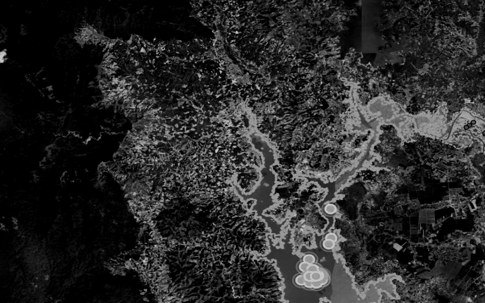
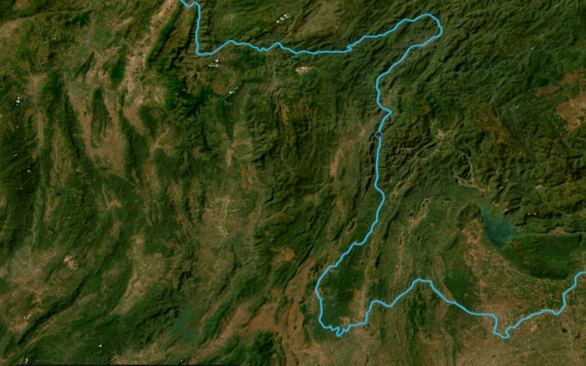

MEKSAT
The Mekong basin from orbit: 419 dams, the Tonle Sap, 13 telemetry branches.

Jinghong: 1,943 m³/s released
Inflow minus storage change closes to 0.00 m³/s.
419cascade dams tracked
3reservoirs verified
1,943m³/s Jinghong outflow
2.45BCM Tonle Sap storage
LaunchOpen the workbench →
Thirteen telemetry branches
Boundary files for your model

DHI MIKE 11
Verified outflow of Jinghong, Nuozhadu and Ialy as a boundary file.
SWAT+ rainfall
Calibrated precipitation for four sub-basins, ready to load.
Telemetry matrix
Water level, inflow and outflow of the three verified dams.